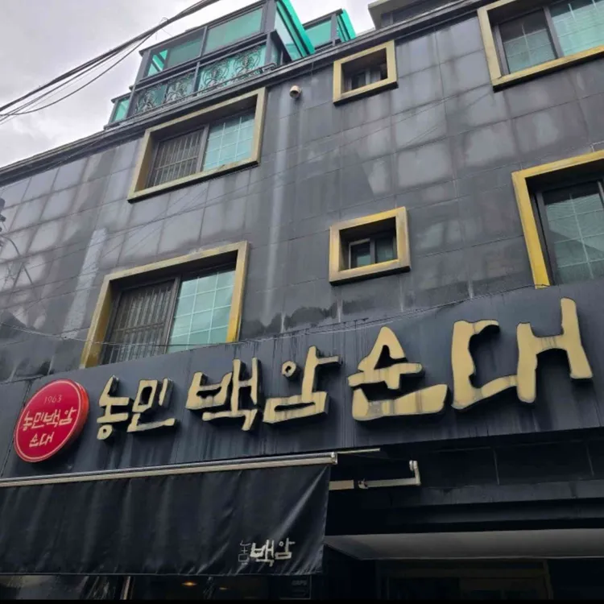
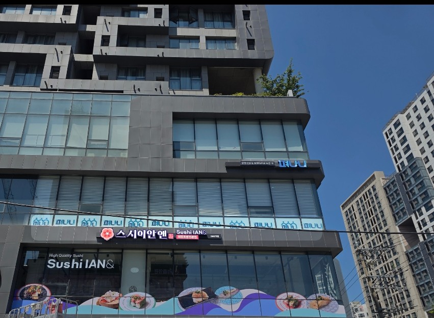
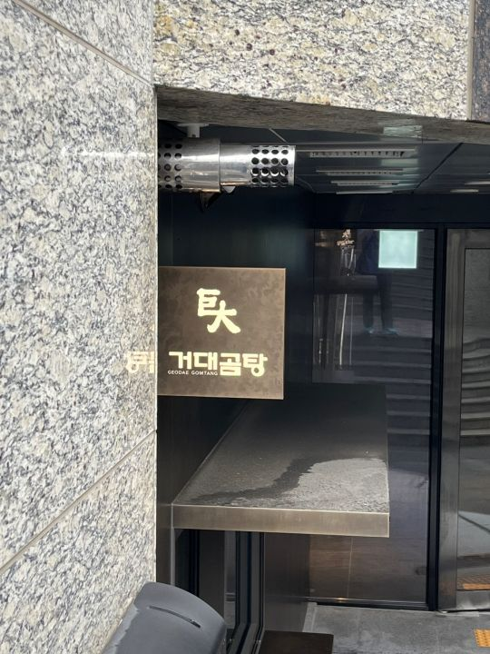
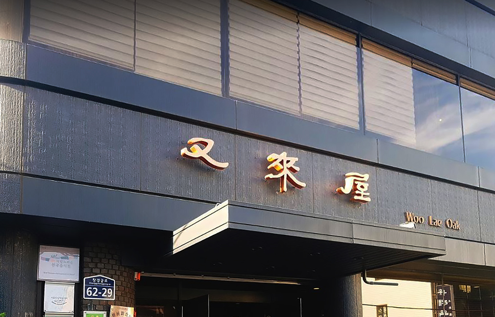

맛으로 기억하는 서울
따뜻한 국밥 / 깊은 곰탕 / 정갈한 초밥 / 담백한 냉면
한 끼를 넘어, 하나의 기억으로
멀리 떠나지 않아도
맛있는 여행은 시작되니까.
익숙한 동네에서도 식당 문을 열면 새로운 장면을 만납니다. 간판을 올려다보던 순간부터 마지막 한 숟갈까지, 일상의 작은 여행을 이곳에 남기려 합니다.
이 기록장은 네 곳의 식당에서 시작합니다.
다녀온 날과 그날의 이야기는 천천히 채워 갈게요.